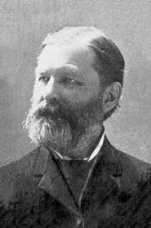

Robert Lowry was born in
Philadelphia, March 12, 1826.


His fondness for music was
exhibited in his earliest years. As a child he amused himself with the
various musical instruments that came into his hands. At the age of
seventeen he joined the First Baptist Church of Philadelphia, and soon
became an active worker in the Sunday-school as teacher and chorister.
At the age of twenty-two
he gave himself to the work of the ministry, and entered upon a course of
study at the University of Lewisburg, Pa. At the age of twenty-eight he was
graduated with the highest honors of his class. In the same year of his
graduation, he entered upon the work of the ministry. He served as pastor at
West Chester, Pa., 1851-1858; in New York City, 1859-1861; in Brooklyn,
1861-1869; in Lewisburg, Pa., 1869-1875. While pastor at Lewisburg, he was
also professor of belles lettres in the University, and received the
honorary degree of D. D. in 1875.
He then went to
Plainfield, N. J., where he became pastor of Park Avenue Church. In each of
these fields his work was crowned with marked success.
Dr. Lowry was a man of
rare administrative ability, a most excellent preacher, a thorough Bible
student, and whether in the pulpit or upon the platform, always a brilliant
and interesting speaker. He was of a genial and pleasing disposition, and a
high sense of humor was one of his most striking characteristics. Very few
men had greater ability in painting pictures from the imagination. He could
thrill an audience with his vivid descriptions, inspiring others with the
same thoughts that inspired him.
His melodies are sung in
every civilized land, and many of his hymns have been translated into
foreign tongues. While preaching the Gospel, in which he found great joy,
was his life-work, music and hymnology were favorite studies, but were
always a side issue, a recreation.
In the year 1880, he took
a rest of four years, visiting Europe. In 1885 he felt that he needed more
rest, and resigned his pastorate at Plainfield, and visited in the South and
West, also spending some time in Mexico. He returned, much improved in
health, and again took up his work in Plainfield.
On the death of Wm. B.
Bradbury, Messrs. Biglow & Main, successors to Mr. Bradbury in the
publishing business, selected Dr. Lowry for editor of their Sunday-school
book, Bright Jewels, which was a great success.
Subsequently Dr. W. Doane was associated with him in the issue of the
Sunday-school song book, Pure Gold, the sales of which
exceeded a million copies. Then came Royal Diadem, Welcome
Tidings, Brightest and Best, Glad
Refrain, Good as Gold, Joyful
Lays, Fountain of Song, Bright
Array, Temple Anthems, and numerous other
volumes. The good quality of their books did much to stimulate the cause of
sacred song in this country.
When he saw that the
obligations of musical editorship were laid upon him, he began the study of
music in earnest, and sought the best musical text-books and works on the
highest forms of musical composition. He possessed one of the finest musical
libraries in the country. It abounded in works on the philosophy and science
of musical sounds. He also had some musical works in his possession that
were over one hundred and fifty years old.
One of his labors of love
some years ago was an attempt to reduce music to a mathematical basis. On
the established fact that Middle C has two hundred and fifty-six vibrations
per second, he prepared a scale and went to work on the rule of three. After
infinite calculation and repeated experiments, he carried it far enough to
discover that it would not work.
A reporter once asked him
what was his method of composition — "Do you write the words to fit the
music, or the music to fit the words?" His reply was, "I have no method.
Sometimes the music comes and the words follow, fitted insensibly to the
melody. I watch my moods, and when anything good strikes me, whether words
or music, and no matter where I am, at home or on the street, I jot it down.
Often the margin of a newspaper or the back of an envelope serves as a
notebook. My brain is a sort of spinning machine, I think, for there is
music running through it all the time. I do not pick out my music on the
keys of an instrument. The tunes of nearly all the hymns I have written have
been completed on paper before I tried them on the organ. Frequently the
words of the hymn and the music have been written at the same time."
The Doctor frequently said
that he regarded "Weeping Will Not Save Me" as the best and most
evangelistic hymn he ever wrote. The following are some of his most popular
and sweetest gospel melodies: "Shall We Gather at the River?," "One More
Day's Work for Jesus," "Where is My Wandering Boy To-night?," "I Need Thee
Every Hour," "The Mistakes of My Life," "How Can I Keep from Singing?," "All
the Way My Saviour Leads Me," "Saviour, Thy Dying Love," "We're Marching to
Zion," etc. "Shall We Gather at the River?" is perhaps, without question,
the most widely popular of all his songs. Of this Mr. Lowry said: "It is
brass band music, has a march movement, and for that reason has become
popular, though for myself I do not think much of it." Yet he tells us how,
on several occasions, he had been deeply moved by the singing of that hymn,
"Going from Harrisburg to Lewisburg once I got into a car filled with
half-drunken lumbermen. Suddenly one of them struck up, "Shall We Gather at
the River?" and they sang it over and over again, repeating the chorus in a
wild, boisterous way. I did not think so much of the music then as I
listened to those singers, but I did think that perhaps the spirit of the
hymn, the words so flippantly uttered, might somehow survive and be carried
forward into the lives of those careless men, and ultimately lift them
upward to the realization of the hope expressed in my hymn." "A different
appreciation of it was evinced during the Robert Raikes' Centennial. I was
in London, and had gone to meeting in the Old Bailey to see some of the most
famous Sunday-school workers in the world. They were present from Europe,
Asia, and America. I sat in a rear seat alone. After there had been a number
of addresses delivered in various languages, I was preparing to leave, when
the chairman of the meeting announced that the author of "Shall We Gather at
the River?" was present, and I was requested by name to come forward. Men
applauded and women waved their handkerchiefs as I went to the platform. It
was a tribute to the hymn; but I felt, when it was over, that, after all, I
had perhaps done some little good in the world, and I felt more than ever
content to die when God called." On Children's Day in Brooklyn, in 1865,
this song was sung by over forty thousand voices.
While Dr. Lowry said, "I
would rather preach a gospel sermon to an appreciative, receptive
congregation than write a hymn," yet in spite of his preferences, his hymns
have gone on and on, translated into many languages, preaching and
comforting thousands upon thousands of souls, furnishing them expression for
their deepest feelings of praise and gratitude to God for His goodness to
the children of men. What he had thought in his inmost soul has become a
part of the emotions of the whole Christian world. We are all his debtors.
Rev. Robert Lowry, D. D.,
died at his residence in Plainfield, K J., November 25, 1899. Dead, yet he
lives and his sermons in gospel song are still heard and are doing good. Dr.
Lowry was a great and good man, and his life, well spent, is highly worthy
of a place among the world's greatest gospel song and hymn writers.
-- Biography
of Gospel Song and Hymn Writers
勞瑞自幼愛好音樂，但未專修，在四十歲前，他沒有寫過詩歌。 當他與杜恩（W. H.. Doane）合編主日學詩歌時，就開始在音樂上下苦工，廣閱音樂書籍，他擁有一間完備的音樂圖書室。
通常他作曲，是先在琴上奏出曲調，再記下樂譜。 他編有十八種不同的聖詩集，名作有「我時刻需要祢」（I
Need Thee Every Hour），「同往錫安」（We’re Marching to
Zion），「救世主凡事引導我」（All the Way My Savior Leads Me），「惟靠主耶穌的寶血」（Nothing
But the Blood）等。
惟靠主耶穌的寶血
Nothing
but the Blood
我罪怎能得洗淨？惟靠主耶穌的寶血；
我心怎能得完全？惟靠主耶穌的寶血。
我的刑罰怎得除？惟靠主耶穌的寶血；
得救是否靠得住？惟靠主耶穌的寶血。
我無功勞補罪過-惟靠主耶穌的寶血；
一生言語都有錯-惟靠主耶穌的寶血。
靠主寶血享平安-惟靠主耶穌的寶血；
洗去困苦並愁煩-惟靠主耶穌的寶血。
（副歌）
主寶血當頌揚，洗我罪免死亡；
此活泉世無雙，惟有主耶穌的寶血。
（可在『YouTube 』上聆聽此歌）
勞瑞說：「我寧願寫聖詩勝於講道，因聖詩可長久流傳，影響很多人，但一篇講章，不久就被遺忘」。他所作的「主復活」（Christ
Arose），每年在復活節時被許多教會誦唱。
主復活
Christ
Arose
主在墳墓安睡，耶穌，我救主！
等待復活日來，耶穌，我主！
兵丁守墓無用，耶穌，我救主！
封石也歸虛空，耶穌，我主！
死權不能困主，耶穌，我救主！
因已被主得勝，耶穌，我主！
（副歌）
主從墳墓裡復活，得勝一切仇敵與罪惡；
主耶穌復活，得勝黑暗君王，
從此永遠與眾聖徒一同作王；
主復活！主復活！
哈利路亞！主復活！
中英文聖詩集參考
英文歌名 Follow
On
From Wikipedia, the free encyclopedia
Jump to navigationJump
to search
"Follow On", also known in
certain cases as "Down In The Valley With My Saviour I Would Go"[1] and
"I Will Follow Jesus", is a Christian hymn written
in 1878 by William
Orcutt Cushing.[2] The
music for it was composed in 1880 by both Robert
Lowry and W.
Howard Doane.[3]
History[edit]
The hymn was originally written as a Baptist hymn
and it is also used by the Salvation
Army.[4] The
lyrics are based on the Biblical verse in Hosea
6:3.[5]
Then we shall know,
If we follow on to know the LORD:
his going forth is prepared as the morning,
and he shall come unto us as the rain,
as the latter and former rain unto the earth
Cushing wrote this hymn in New York
after he became a Christian minister in 1854; he started writing
hymns in 1870 when his health declined, forcing him to retire. He
wrote more than three hundred hymns.[6]
Cushing once said about his
inspiration to write it:
Longing to give up all for Christ who
had given his life for me, I wanted to be willing to lay
everything at his feet, with no wish but to do his will, to live
henceforth only for his glory. Out of this feeling came the
hymn, ‘Follow On.’ It was written with the prayer and the hope
that some heart might by it be led to give up all for Christ.
Much of the power and usefulness of the hymn, however, are due
to Mr. Lowry, who put it into song.[3]
Present day[edit]
The hymn started to get dropped from
certain hymn books during the 1960s; however it is still contained
in Baptist hymnals.[7] There
is now a movement to bring back certain traditional hymns such as
"Follow On" into current usage.[8]
The hymn's music has been adopted for
the anthem of the Scottish association
football club, Rangers,
in their club anthem, "Follow
Follow".[9] There
have been disagreements over the Rangers fans' usage of the hymn's
music as their anthem with claims such as from the Boys' Brigade
complaining that using it and changing the lyrics prevented it from
remaining a major hymn in their organization because of the
association with Rangers.[10] The
original hymn was sung at their Ibrox
Stadium in Glasgow on
3 January 2011 at a memorial service for the sixty-six victims of
the Ibrox
disaster and their families and friends.[9]
References[edit]


{kind=link}
{kind=link}